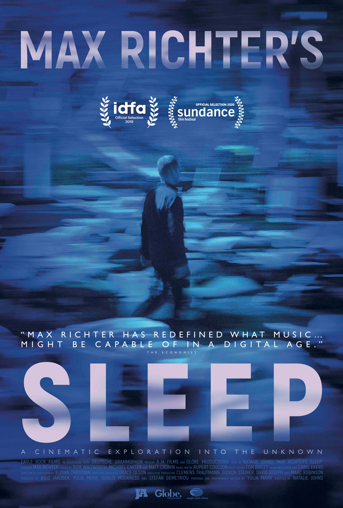
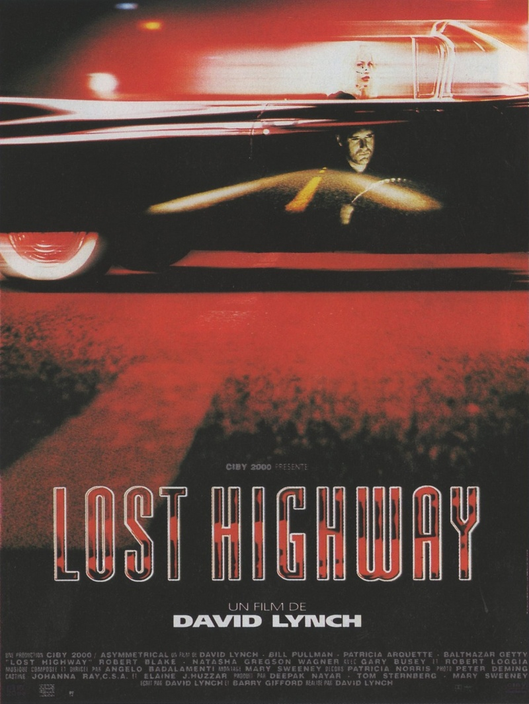

Сон Макса Рихтера (Beat Film Festival)
[18+]
21:00–23:00
2019
Документальный
Великобритания, США
Натали Джонс
Русский
Композитор Макс Рихтер, живой классик современной академической музыки, писал свой 8-часовой альбом-колыбельную «Sleep» урывками по ночам, потому что днями корпел над многочисленными саундтреками, в том числе к «Прибытию» Вильнева и сериалу «Оставленные». Зато исполнялся «Sleep» с размахом: в Гранд-парке Лос-Анджелеса, лондонском музее Wellcome и берлинском культурном центре Kraftwerk для зрителей разбивали настоящий лагерь с раскладушками — не спать во время этого концерта полагалось только музыкантам, а дрема аудитории, наоборот, поощрялась.
Режиссер Натали Джонс едва ли хотела просто вместить побивший все рекорды концерт в полтора часа экранного времени. «Сон Макса Рихтера» — скорее погружение в этот удивительный зрительский опыт. Ведь «Sleep» — не только тихий бунт против ускорения мира, в котором фокус внимания исчисляется секундами. Это попытка выстроить коммуникацию в обход привычному, бодрствующему сознанию, исследовать границы между сомническим и реальным, и кино для этого — идеальный инструмент: любой фильм и есть сновидение наяву, в которое мы погружаемся каждый раз, очутившись в темном зале кинотеатра. А еще это, безусловно, погружение в мир Макса Рихтера — что за работой, что дома он оказывается застенчивым, хоть и достаточно отчаянным человеком, чтобы не бояться доверить собственную хрупкость музыке. И через его воспоминания, домашние видео и разговоры с близкими становится отчетливой и неоспоримой связь антропологии и кино, электронной и академической музыки, полузабытого прошлого и настоящего, из которого так легко вернуться в детство, услышав в полудреме звуки колыбельной.
MTE2NDUyMzowOjA6MDoxMTc3NTk4OjA6MDowOjQ6MDpydTowOjA6MDplZDk0NWQ2Yjk5NmZmNDU2NTdjOWRjNzc3MjE0M2E5MzJjMzIyYjY2

Шоссе в никуда
[18+]
00:00–2:00
1996
Триллер, детектив
Франция, США
Дэвид Линч
Русский
Фред Мэдисон обвинен в убийстве своей жены Ренэ и приговорен к высшей мере наказания. Незадолго до исполнения приговора он таинственным образом исчезает из камеры смертников, а на его месте находят растерянного и ничего не понимающего Пита Дейтона. Как он оказался в камере? Куда исчез убийца?
Выпущенный на свободу, Пит пытается вернуться к повседневной нормальной жизни, но вместо нее его ждет необъяснимый, поражающий воображение кошмар...
MTE2NDUyMzoxMTY0NTI2OjA6MDoxMTY1MDg1OjExNjQ3ODg6MDowOjQ6MTE2NDUzOTpydTowOjA6MDplZDk0NWQ2Yjk5NmZmNDU2NTdjOWRjNzc3MjE0M2E5MzJjMzIyYjY2
Твин Пикс: Сквозь огонь
[18+]
3:00–5:00
1992
Ужасы, триллер
Франция, США
Дэвид Линч
Русский
Добро пожаловать в Твин Пикс! Тихий городок в живописной долине с населением 51.201 человек, где можно попробовать чертовски вкусный кофе и домашний вишневый пирог. Твин Пикс выглядит процветающим местом, где живут добропорядочные граждане, преданные семейным устоям. С первого взгляда их жизнь похожа на идиллическую. Но только с первого взгляда.
Здесь всё совсем не то, чем кажется, и каждому есть что скрывать. Загадочная смерть и расследование, больше похожее на разгадку необычной шарады. Таинственный дневник, мистически исчезнувшие свидетели, странная красная комната, кошмарные галлюцинации, зловещие предзнаменования и юная школьница Лора Палмер, сжигающая свою жизнь...
MTE2NDUyMzoxMTY0NTI2OjA6MDoxMTY1MDkyOjExNjQ3ODg6MDowOjQ6MTE2NDUzOTpydTowOjA6MDplZDk0NWQ2Yjk5NmZmNDU2NTdjOWRjNzc3MjE0M2E5MzJjMzIyYjY2